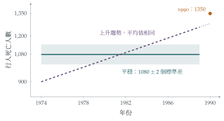

STEP I 1992，第 14 題
繼續之前，請先閱讀題目（原題為英文）。題目載於 STEP Support Programme 的題目資料庫： step.maths.org/questions/92-s1-q14
引子
統計學（statistics）是從數據中學習的科學，而它的第一課就是：數字本身不會說話。「安全六倍」、「升幅驚人」、「死傷日益慘重」：新聞標題每天都把數字變成論斷，而這些論斷往往是錯的；錯不在數字本身有假，而在於比較的對象不對，或是把尋常的隨機波動（random variation）誤當成趨勢。
這道題完全沒有公式，在 STEP 中甚為罕見。它要求你像統計學家那樣思考：要證明每個標題成立，我們需要知道甚麼？單憑偶然，我們又應預期有多大的波動？答案要用到泊松分佈（Poisson distribution）（第 12.18 節），而當中的推理正是本章其餘部分的基礎。
動筆之前
假如死亡事件以穩定的比率獨立而隨機地發生，每年的總數應有多大的變動？若平均每年為 \(1080\)，每年與平均值的典型偏差是多少？
獨立罕見事件的計數近似服從泊松分佈，而平均值為 \(\mu\) 的泊松計數，其方差（variance）為 \(\mu\)，標準差（standard deviation）為 \(\sqrt\mu\)。取 \(\mu = 1080\)，標準差約為 \(33\)：每年總數落在約 \(1015\) 至 \(1145\) 之間，都不足為奇。
逐步解題
階段 1 「坐飛機比步行安全六倍」
每年有 \(1080\) 名行人死亡，\(180\) 人死於空難。六倍，究竟是甚麼的六倍？
這個標題比較的是死亡總數，但安全與否關乎的是風險：每單位風險承擔量（exposure）的死亡人數。幾乎人人每天都步行，坐飛機的人卻相對較少，而且只是偶一為之。公平的比較應採用每公里行程、每小時行程或每次行程的死亡人數，而這幾種算法可以得出截然不同的答案（按每公里計，航空旅行極為安全；按每次行程計則沒有那麼出色，因為大多數空難死亡都發生在起飛和降落之時）。題目所給的數字根本不能「證明」兩者孰更安全。此外，「在道路意外中喪生的行人」是個狹窄的類別；整體的道路死亡人數要大得多。
階段 2 「我們的天空更安全：1990 年僅 125 人喪生」
空難死亡像獨立的罕見事件嗎？你預期每年總數的變動有多大？
空難死亡是成羣出現的：一次墜機就可能奪去數百人的性命。因此每年的總數主要取決於墜機的次數，而這個次數很小，於是總數每年的變動極大。某一年有 \(125\) 人死亡，相對於平均的 \(180\) 人，與情況毫無改變完全吻合：只要多一次墜機，這個數字就會徹底改觀。一年的數據不能顯示趨勢。
階段 3 「道路死傷日益慘重：星期二 7 人喪生」
平均每天有多少名行人喪生？若每天的死亡人數服從泊松分佈，一天之內出現 \(7\) 人或以上的情況有多常見？
平均每天有 \(\frac{1080}{365} \approx 2.96\) 名行人死亡。若每天的計數服從這個平均值的泊松分佈，則 \(\mathrm{P}(\geq 7) \approx 0.031\)：純粹出於偶然，每年就約有 \(11\) 天會有 \(7\) 名或以上的行人死亡。（而且「道路死傷」想必還包括司機和乘客，那麼一天之內有 \(7\) 人死於道路意外就更不值得大驚小怪了。）單單一天的數字，對趨勢毫無說明作用。這個標題從一個變動極大的數列中挑出一個極端值，是典型的謬誤。
階段 4 「升幅驚人：1990 年 1350 名行人喪生」
把 \(1350\) 與泊松標準差比較。這純屬偶然嗎？若不是，還有甚麼可以解釋它？這又足以稱為「升幅驚人」嗎？
這是全題最有分量的部分。在穩定的泊松模型之下，\(1350\) 比平均值 \(1080\) 高出 \(270\)，約為 \(8\) 個標準差：這極不可能是偶然所致。所以很可能確實有些事情改變了。但這個標題仍然言過其實，原因有以下幾方面：
被平均值掩蓋的趨勢。\(1080\) 這個數字是 \(16\) 年的平均值。假如死亡人數由 1974 年的約 \(900\) 穩步上升至 1989 年的約 \(1260\)，平均值仍然是 \(1080\)，而 1990 年的 \(1350\) 只不過是延續既有的趨勢，並非突如其來的「驚人」升幅（圖 13.1.1）。我們需要逐年的數字。
風險承擔量。人口增長、步行的人增多、交通更繁忙或人口老化，都會令死亡人數上升，而道路按每次行程計卻沒有變得更危險。按人均計算，或按每公里步行路程計算的比率，才是恰當的量度。
定義。死亡個案的記錄或分類方式一旦改變（例如意外發生後多久之內死亡才計算在內），就可以造成數字的跳升。
過度離散（over-dispersion）。現實中每年計數的變動比泊松模型所顯示的要大，因為各種條件（天氣、經濟活動）都在變。對「\(8\) 個標準差」這個說法應有所保留。
升幅很可能是真實的，但它是否驚人、成因為何，則需要更多數據才能判斷。

回顧
同類才可相比。風險需要有分母：每人、每公里或每次行程的死亡人數。
認識自然波動。泊松分佈的變異性，以及成羣出現的事件那大得多的變異性，讓我們知道甚麼時候的變化才值得留意。
平均值會掩蓋趨勢。單憑一個概括的數字，無法描述一個量如何隨時間變化。
背後的數學
訊號與雜訊
每一個統計問題，歸根究底都是要把訊號（signal，即真實的效應或趨勢）與雜訊（noise，即隨機波動）分開。泊松模型為獨立事件計數中的雜訊提供了一把尺：標準差為 \(\sqrt\mu\)。罕見事件的相對波動很大：計數為 \(9\) 時，波動約為 \(\pm3\)，即其大小的三分之一；而計數為 \(10\,000\) 時，波動只有約 \(1\%\)。正因如此，小數目（某一天的死亡人數、某一年的墜機次數）才會屢屢被人過度解讀，而小鎮上的癌症「羣組」最終也多半只是偶然。
均值回歸
還有另一個陷阱。道路安全攝影機往往安裝在剛剛經歷了異常惡劣一年的地點。翌年，意外減少，功勞就歸於攝影機。但異常惡劣的一年過後，本來就很可能迎來較為平常的一年：這就是均值回歸（regression to the mean），最早由高爾頓（Francis Galton）在 1880 年代提出。要把攝影機的效果與均值回歸分開，就必須與沒有安裝攝影機的類似地點作比較，這正是對照實驗（controlled experiment）背後的理念。
南丁格爾（Florence Nightingale）以克里米亞戰爭中的護士身分聞名於世，同時也是統計學的先驅。她在 1858 年繪製的「玫瑰圖」顯示，死於可預防疾病的士兵遠多於死於創傷的士兵，並說服了政府改革軍隊的衞生狀況。她堅持使用比率（每年每千名士兵的死亡人數）而非原始總數，並堅持同類才可相比，這些正是本題所考核的要點。她是首位獲選為皇家統計學會（Royal Statistical Society）會士的女性。
思維技巧
在接受一個統計論斷之前，先問清楚：比較的對象是甚麼，分母是甚麼，以及單憑偶然會預期有多大的波動。
到了大學，統計學課程會把這些問題化為精確的方法：假設檢驗（hypothesis test）探究一項觀察結果是否與偶然相符；置信區間（confidence interval）說明一個量測量得有多精確；而實驗設計（design of experiments）則確保比較公平。
延伸練習
泊松分佈的尾部。設 \(X\) 服從平均值為 \(2.96\) 的泊松分佈，驗證 \(\mathrm{P}(X \geq 7) \approx 0.031\)。你預期每年有多少天會有 \(9\) 名或以上的行人死亡？
成羣出現的死亡。假設墜機事故按泊松過程（Poisson process）發生，比率為每年 \(1.2\) 宗，而每宗奪去 \(150\) 人的性命。求每年空難死亡人數的平均值和標準差。一年之內有 \(125\) 人或以下死亡，是否不尋常？有沒有可能某一年恰好有 \(125\) 人死亡？
顯著的升幅？假如 1974–1989 年的數字一直平穩地維持在 \(1080 \pm 33\)，試（利用正態近似（normal approximation））求單一年份出現 \(1350\) 或以上的概率。
擬一個更好的標題。為四個標題逐一改寫，各擬一個數據真正支持的標題。
延伸閱讀
David Spiegelhalter, The Art of Statistics（Pelican）。講述如何從數據中學習，並附有大量取自新聞的例子。
Tim Harford, How to Make the World Add Up（Bridge Street）。思考傳媒中的數字的十條法則。
Darrell Huff, How to Lie with Statistics（Penguin）。1954 年出版的短篇經典，至今仍不過時。